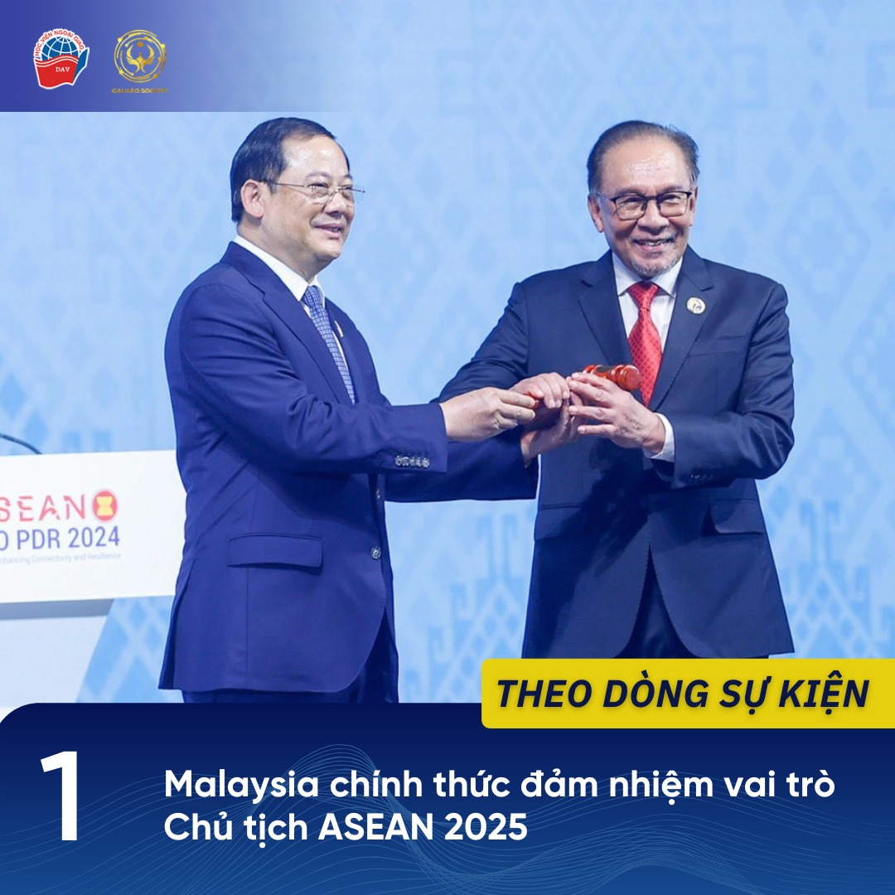
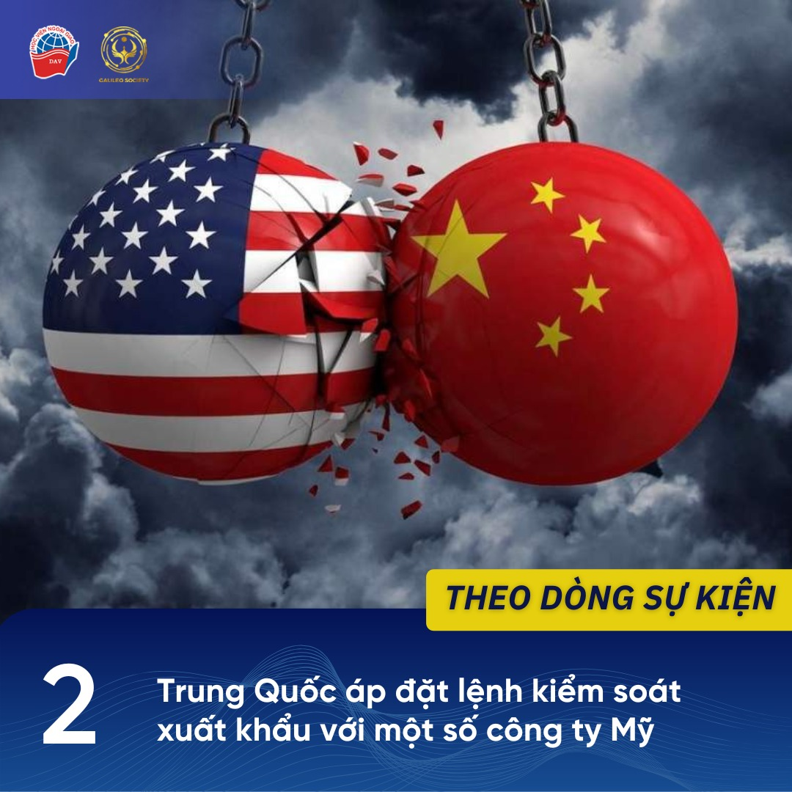
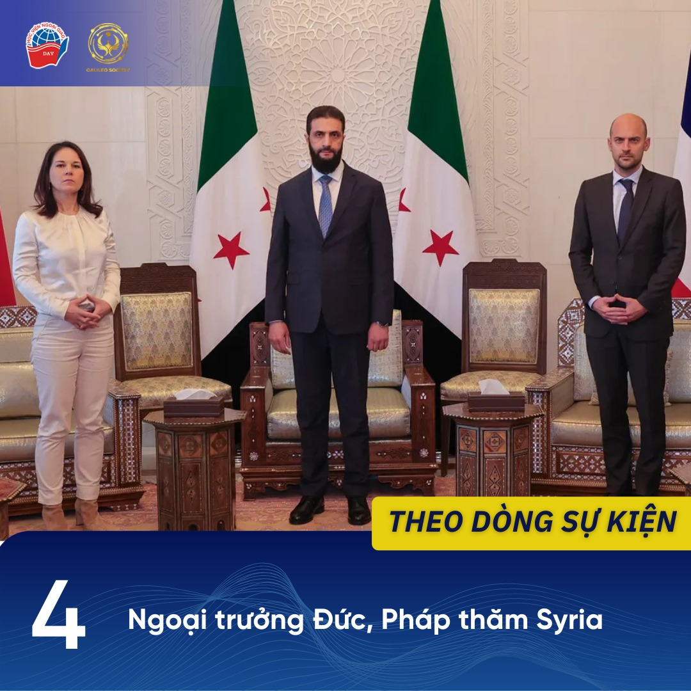
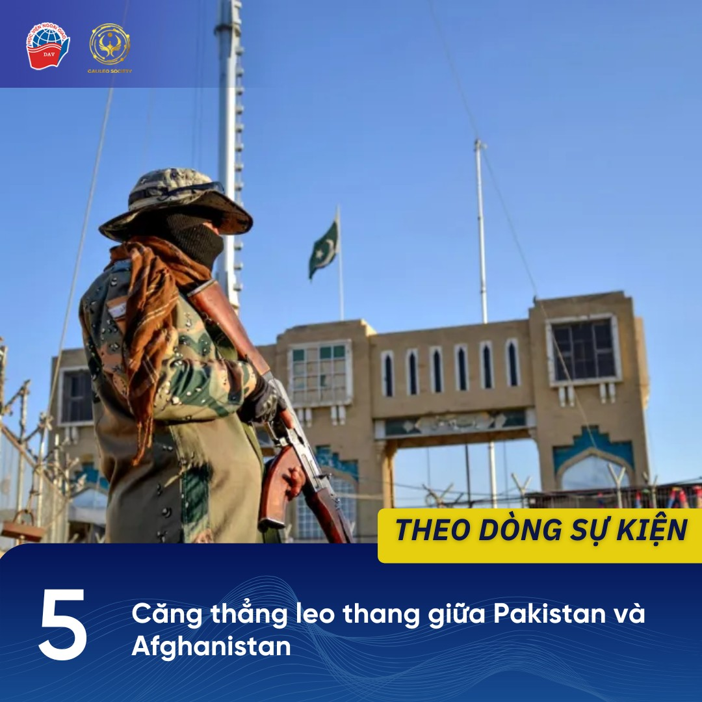

1 Malaysia chính thức đảm nhiệm vai trò Chủ tịch ASEAN 2025
Ngày 2/1/2025, Malaysia chính thức đảm nhiệm vai trò Chủ tịch luân phiên của ASEAN. Với chủ đề chính trong năm 2025 là “Bao trùm và Bền vững”, Malaysia sẽ triển khai nhiều hội nghị quan trọng nhằm định hình chương trình nghị sự của ASEAN.
Cụ thể, Malaysia sẽ chủ trì Hội nghị hẹp Ngoại trưởng ASEAN vào ngày 18-19/1 sắp tới, ngoài ra cũng lên kế hoạch tổ chức Hội nghị cấp cao lần thứ 46 và 47. Tới tháng 5/2025, Malaysia sẽ thúc đẩy sáng kiến tổ chức Hội nghị cấp cao đầu tiên giữa ASEAN với Hội đồng hợp tác vùng Vịnh (GCC) và Trung Quốc.
Để hiện thực hóa những kế hoạch trên, Thủ tướng Malaysia Anwar Ibrahim cho biết sẽ mời nhiều cựu lãnh đạo ASEAN làm cố vấn riêng để hỗ trợ đảm nhiệm thành công vai trò Chủ tịch ASEAN 2025.
NGUỒN THAM KHẢO:
“Malaysia chính thức tiếp quản vai trò Chủ tịch ASEAN 2025”, VOV, ngày 2/1/2025. Truy cập ngày 4/1/2025.
https://vov.vn/.../malaysia-chinh-thuc-tiep-quan-vai-tro…
2 Trung Quốc áp đặt lệnh kiểm soát xuất khẩu với một số công ty Mỹ
Ngày 2/1/2025, Bộ Thương mại Trung Quốc cho biết đã bổ sung 28 công ty Mỹ vào danh sách kiểm soát xuất khẩu. Các công ty có trong danh sách chủ yếu hoạt động trong lĩnh vực quốc phòng, bao gồm General Dynamics, Lockheed Martin, Boeing Defense, Space & Technology, v.v.
Theo đó, mọi hoạt động xuất khẩu hàng hóa lưỡng dụng (các mặt hàng có thể được sử dụng cho cả mục đích dân sự và quân sự) cho 28 công ty trên đều bị cấm kể từ ngày 2/1 nhằm “bảo vệ an ninh và lợi ích quốc gia”. Thông báo được đưa ra trong bối cảnh Mỹ đang siết chặt các quy định xuất khẩu chất bán dẫn sang Trung Quốc, đồng thời một số công ty trong danh sách trên được cho là có liên quan đến hoạt động bán vũ khí cho vùng lãnh thổ Đài Loan (Trung Quốc).
Các nhà phân tích nhận định động thái này cho thấy quyết tâm của Trung Quốc trong việc duy trì chính sách về Đài Loan ngay cả sau khi Tổng thống Mỹ đắc cử Donald Trump nhậm chức vào ngày 20/1 sắp tới.
NGUỒN THAM KHẢO:
“China adds 28 US entities to export control list”, Reuters, ngày 2/1/2025. Truy cập ngày 4/1/2025.
https://www.reuters.com/.../china-adds-28-us-entities.../
Mai Phương, “Trung Quốc thắt chặt xuất khẩu các mặt hàng sang 28 công ty, tổ chức Mỹ”, An ninh Thủ đô, ngày 4/1/2025. Truy cập ngày 4/1/2025.
https://www.anninhthudo.vn/trung-quoc-that-chat-xuat-khau..
3 Nga ngừng vận chuyển khí đốt qua Ukraine

Ngày 1/1/2025, tập đoàn năng lượng Gazprom (Nga) đã dừng cung cấp khí đốt cho châu Âu thông qua Ukraine. Nguyên nhân được đưa ra là “do phía Ukraine từ chối gia hạn thỏa thuận trung chuyển khí đốt với Nga.”
Hàng năm, Nga vận chuyển trung bình 40 tỷ mét khối khí đốt cho châu Âu thông qua Ukraine. Tuy nhiên, do tình trạng căng thẳng chính trị hiện nay giữa các nước châu Âu với Nga liên quan tới vấn đề Ukraine, Liên minh châu Âu (EU) đang có những nỗ lực để giảm phụ thuộc vào khí đốt từ Nga. Các nước châu Âu đang tìm nguồn cung thay thế đến từ Thổ Nhĩ Kỳ hay Azerbaijan.
Việc Nga ngừng cung cấp khí đốt cho châu Âu qua Ukraine được dự báo sẽ làm trầm trọng thêm tình hình kinh tế ở các nước châu Âu, khiến lạm phát và chi phí sinh hoạt của người dân ngày càng gia tăng.
NGUỒN THAM KHẢO:
“Nga chính thức ngừng cung cấp khí đốt cho châu Âu”, Quân đội Nhân dân, ngày 1/1/2025. Truy cập ngày 4/1/2025.
https://www.qdnd.vn/.../nga-chinh-thuc-ngung-cung-cap-khi...
“Russian gas transit through Ukraine stops completely - gas operators”, TASS, ngày 1/1/2025. Truy cập ngày 4/1/2025.
https://tass.com/economy/1895697?utm_source=twitter.com…
4 Ngoại trưởng Đức, Pháp thăm Syria
Ngày 3/1/2025, Ngoại trưởng Đức Annalena Baerbock và Ngoại trưởng Pháp Jean Barrot có chuyến thăm tới thủ đô Damascus để làm việc với thủ lĩnh Ahmed al-Sharaa của lực lượng Hayat Tahrir al-Sham (HTS), hiện nắm quyền tại Syria.
Chuyến thăm diễn ra trong bối cảnh một số quốc gia châu Âu đã bắt đầu mở những kênh liên lạc với lực lượng HTS. Về chính quyền chuyển tiếp Syria, thủ lĩnh al-Sharaa khẳng định sẽ “cầm quyền thay mặt cho mọi người dân Syria” và kêu gọi các nước dỡ bỏ lệnh cấm vận áp đặt lên Syria từ thời Tổng thống al-Assad.
Trong cuộc làm việc, hai ngoại trưởng kêu gọi chính phủ chuyển tiếp Syria tiến hành các bước đi chính trị để giải quyết những vấn đề còn tồn tại như vấn đề người Kurd ở Đông Bắc Syria, vấn đề tôn giáo, thành phần chính trị trong chính quyền mới, v.v. Ngoại trưởng Baerbock cho biết: “Châu Âu sẽ hỗ trợ Syria trong quá trình chuyển đổi nhưng sẽ không tài trợ cho các cấu trúc Hồi giáo mới.”
NGUỒN THAM KHẢO:
“French, German foreign ministers meet Syria’s de facto rulers”, Al Jazeera, ngày 3/1/2025. Truy cập ngày 4/1/2025.
https://www.aljazeera.com/.../french-german-foreign...
Quỳnh Chi, “Ngoại trưởng Pháp, Đức gặp lãnh đạo chính quyền lâm thời Syria tại Damascus”, VTV, ngày 4/1/2025. Truy cập ngày 4/1/2025.
https://vtv.vn/.../ngoai-truong-phap-duc-gap-lanh-dao…
5 Căng thẳng leo thang giữa Pakistan và Afghanistan
Ngày 3/1/2025, tại một số khu vực biên giới giữa Afghanistan - Pakistan đã xảy ra nổ súng giữa lực lượng vũ trang hai nước. Phía Afghanistan cho biết, Pakistan đã pháo kích vào tỉnh Khost (Afghanistan) và lực lượng Afghanistan đã nổ súng đáp trả. Giao tranh đã diễn ra trong nhiều giờ, gây ảnh hưởng tới đời sống người dân vùng biên giới.
Căng thẳng giữa Afghanistan và Pakistan bắt đầu leo thang kể từ khi lực lượng Taliban trở lại nắm quyền tại Afghanistan năm 2021. Cuộc đụng độ này là hành động căng thẳng thứ hai chỉ trong ít tháng vừa qua, sau cuộc tấn công của quân đội Pakistan khiến nhiều người Afghanistan thương vong cuối tháng 12/2024.
Tình trạng căng thẳng giữa hai bên bắt nguồn từ những cáo buộc của Pakistan về việc Afghanistan chứa chấp các thành viên của nhóm cực đoan Tehrik-e Taliban Pakistan, đe dọa an ninh của Pakistan. Kabul luôn phủ nhận những cáo buộc này, đồng thời phản đối việc Islamabad buộc hồi hương nhiều người tị nạn Afghanistan.
NGUỒN THAM KHẢO:
Bibi Amina Hakimi, “Islamic Emirate, Pakistani Forces Clash in Khost”, TOLO News, ngày 3/1/2025. Truy cập ngày 4/1/2025.
https://tolonews.com/afghanistan-192443
Najibullah Lalzoy, “Pakistan’s Airstrikes in Paktika Escalate Bilateral Tensions: NYT”, TOLO News, ngày 2/1/2025. Truy cập ngày 4/1/2025.
https://tolonews.com/afghanistan-192428